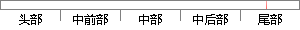

随后，在三维空间下，mic1 为坐标原点建立坐标系。
片段位置图

相似结果|
相似片段 1：坐标系中，平移原来的坐标系甜：，使其坐标原点与新坐标系中的原点完全重合；二、对坐标轴进行一些必要的旋转变换，使得坐标系的各个坐标轴相互重合。建立坐标系如图2．5所示，在三维空间坐标系O-xyz中，假设有一新坐标系∥一x'y’z’，原点的坐标值为(％，％，z0)。
|
※ 片段修改建议 ※
近似词参考：- 建立：成立 创立 创设 建树 确立 设立建设 竖立 创建 树立
系统自动生成语句：随后，在三维空间下，mic1 为坐标原点成立坐标系。
注：本片段修改建议为系统自动生成，仅供参考。